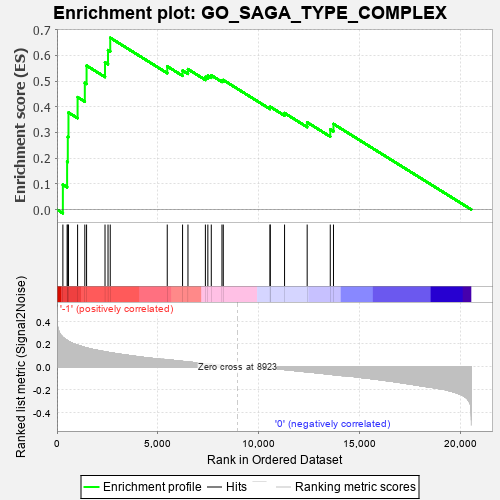
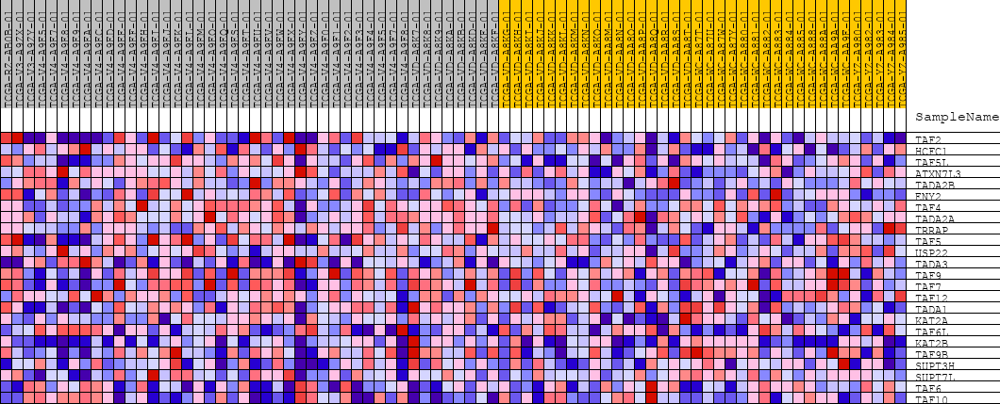
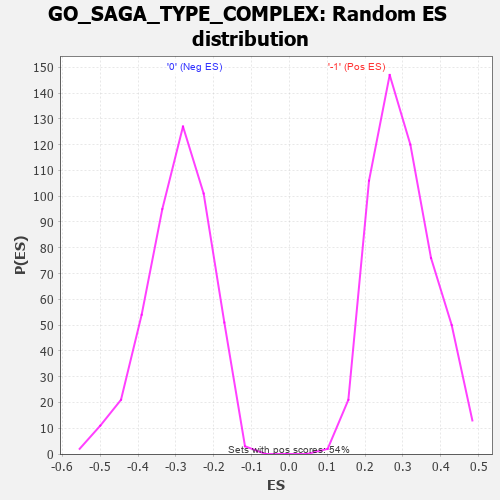

| | | Dataset | GSEAExpression.phenotype_uvm.cls#-1_versus_0 |
| Phenotype | phenotype_uvm.cls#-1_versus_0 |
| Upregulated in class | -1 |
| GeneSet | GO_SAGA_TYPE_COMPLEX |
| Enrichment Score (ES) | 0.6681489 |
| Normalized Enrichment Score (NES) | 2.2471519 |
| Nominal p-value | 0.0 |
| FDR q-value | 0.0060855397 |
| FWER p-Value | 0.007 |
Table: GSEA Results Summary

Fig 1: Enrichment plot: GO_SAGA_TYPE_COMPLEX
Profile of the Running ES Score & Positions of GeneSet Members on the Rank Ordered List
| PROBE | DESCRIPTION
(from dataset) | GENE SYMBOL | GENE_TITLE | RANK IN GENE LIST | RANK METRIC SCORE | RUNNING ES | CORE ENRICHMENT | | 1 | TAF2 | na | | | 291 | 0.257 | 0.0969 | Yes |
| 2 | HCFC1 | na | | | 501 | 0.230 | 0.1864 | Yes |
| 3 | TAF5L | na | | | 535 | 0.227 | 0.2829 | Yes |
| 4 | ATXN7L3 | na | | | 568 | 0.222 | 0.3774 | Yes |
| 5 | TADA2B | na | | | 1020 | 0.189 | 0.4372 | Yes |
| 6 | ENY2 | na | | | 1378 | 0.169 | 0.4929 | Yes |
| 7 | TAF4 | na | | | 1465 | 0.165 | 0.5599 | Yes |
| 8 | TADA2A | na | | | 2378 | 0.132 | 0.5724 | Yes |
| 9 | TRRAP | na | | | 2527 | 0.127 | 0.6201 | Yes |
| 10 | TAF5 | na | | | 2637 | 0.123 | 0.6681 | Yes |
| 11 | USP22 | na | | | 5460 | 0.062 | 0.5572 | No |
| 12 | TADA3 | na | | | 6219 | 0.048 | 0.5408 | No |
| 13 | TAF9 | na | | | 6486 | 0.042 | 0.5461 | No |
| 14 | TAF7 | na | | | 7349 | 0.027 | 0.5158 | No |
| 15 | TAF12 | na | | | 7471 | 0.025 | 0.5207 | No |
| 16 | TADA1 | na | | | 7641 | 0.023 | 0.5222 | No |
| 17 | KAT2A | na | | | 8170 | 0.013 | 0.5019 | No |
| 18 | TAF6L | na | | | 8235 | 0.012 | 0.5039 | No |
| 19 | KAT2B | na | | | 10550 | -0.011 | 0.3956 | No |
| 20 | TAF9B | na | | | 10560 | -0.011 | 0.3999 | No |
| 21 | SUPT3H | na | | | 11270 | -0.023 | 0.3753 | No |
| 22 | SUPT7L | na | | | 12390 | -0.043 | 0.3394 | No |
| 23 | TAF6 | na | | | 13534 | -0.065 | 0.3116 | No |
| 24 | TAF10 | na | | | 13693 | -0.067 | 0.3330 | No |
Table: GSEA details [plain text format]

Fig 2: GO_SAGA_TYPE_COMPLEX
Blue-Pink O' Gram in the Space of the Analyzed GeneSet

Fig 3: GO_SAGA_TYPE_COMPLEX: Random ES distribution
Gene set null distribution of ES for GO_SAGA_TYPE_COMPLEX